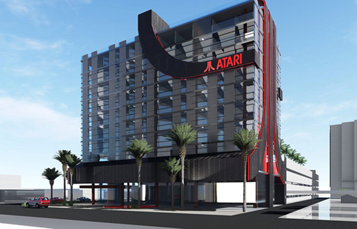
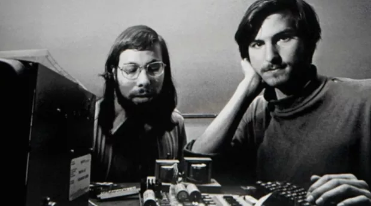
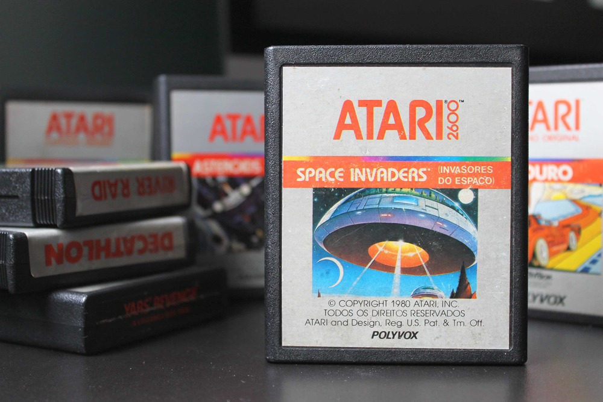
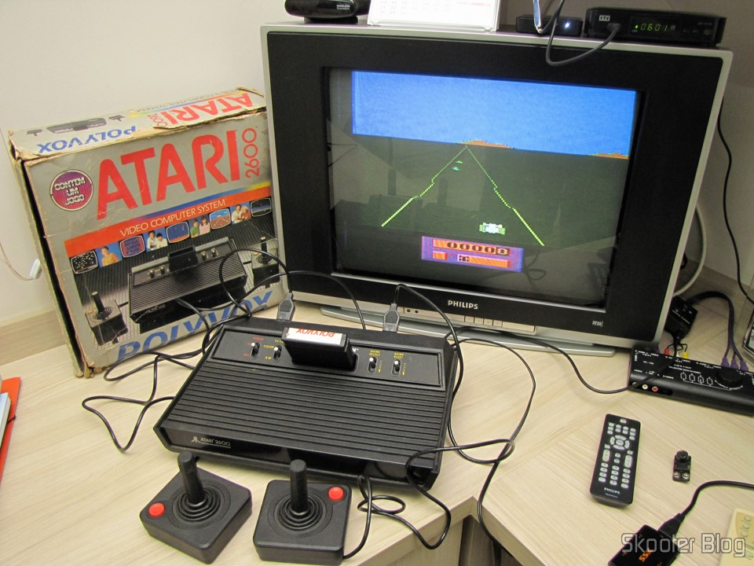
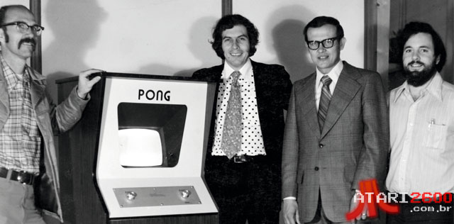

Sobre a Atari
A Atari não é apenas uma empresa de jogos; é a pedra angular sobre a qual toda a indústria de videogames foi construída. Fundada em 1972 por Nolan Bushnell e Ted Dabney em Sunnyvale, Califórnia, ela emergiu como uma força pioneira que transformou o entretenimento eletrônico de uma curiosidade de laboratório em um fenômeno cultural global. Sua jornada começou com o Pong, uma simples simulação de tênis de mesa que, com sua jogabilidade hipnótica, capturou a imaginação do público e acendeu a centelha da revolução dos arcades. Na imagem ao lado, você pode ver os fundadores da Atari com a máquina original de Pong - um artefato que hoje é considerado sagrado na história dos jogos. A cena retrata não apenas um momento tecnológico, mas o nascimento de uma nova forma de entretenimento que uniria pessoas em todo o mundo.
Durante a era de ouro dos videogames (1978-1983), a Atari dominou o mercado com títulos icônicos como ,Space Invaders, ,Asteroids, Centipede e Missile Command. A empresa não apenas definia tendências de jogo, mas também moldava a cultura pop. Seus arcades tornaram-se pontos de encontro social, enquanto seus consoles eram o centro das festas adolescentes. O escritório da Atari, visível em uma das imagens da galeria, era um caldeirão de criatividade onde engenheiros e artistas trabalhavam lado a lado em um ambiente que mais lembrava um laboratório de inovação do que um escritório corporativo tradicional. A recepção da empresa, com seu design futurista e cores vibrantes, refletia a mentalidade inovadora que permeava todas as operações da Atari.
O design filosófico da Atari foi profundamente influenciado pelo movimento contracultural dos anos 60 e 70. Nolan Bushnell, inspirado pelo "Whole Earth Catalog", acreditava que a tecnologia deveria ser acessível e empoderar o indivíduo. Essa filosofia se refletiu não apenas nos produtos, mas na própria cultura corporativa, onde era comum ver cachorros no escritório e festas frequentes que reuniam a equipe. A imagem do escritório da Atari nos anos 80 revela um ambiente de trabalho inovador que permitiu a criação de clássicos como Asteroids e Centipede, com mesas abertas que incentivavam a colaboração e a troca de ideias entre desenvolvedores e designers.
A limitação técnica do Atari 2600, com apenas 128 bytes de RAM e um processador de 1.19 MHz, parecia um obstáculo insuperável. No entanto, os programadores da Atari, como Carol Shaw (a primeira programadora feminina da indústria) e David Crane, transformaram essas restrições em oportunidades criativas. Shaw, ao desenvolver River Raid, descobriu que podia reutilizar gráficos verticalmente para economizar memória, enquanto Crane, em Pitfall!, criou um sistema de rolagem horizontal inovador que se tornou padrão para jogos futuros. Essas soluções criativas não apenas superaram as limitações do hardware, mas também definiram técnicas que seriam adotadas por gerações de desenvolvedores. A imagem da recepção da Atari, com seus painéis verdes e amarelos, representa o ambiente onde essas inovações tecnológicas eram concebidas e testadas.
No entanto, sua história também é marcada por desafios monumentais. O crash dos videogames de 1983, causado em parte pela saturação do mercado com jogos de baixa qualidade incluindo o infame E.T. the Extra-Terrestrial, quase destruiu a indústria e levou a Atari à divisão. A imagem do escritório da Atari durante esse período revela uma mudança sutil na atmosfera - menos festiva, mais focada em resolver problemas. A divisão de consoles foi vendida para a Jack Tramiel (fundador da Commodore), enquanto a divisão de arcades continuou como Atari Games. Esta fragmentação criou uma complexa teia de empresas e direitos que persiste até hoje, com diferentes entidades detendo partes do legado Atari.
A resiliência da marca é notável. Nos anos 90, a Atari tentou retornar ao mercado de consoles com o Jaguar (1993), promovido como o primeiro console de 64 bits, mas enfrentou forte concorrência do Sony PlayStation e Sega Saturn. Apesar do fracasso comercial, o Jaguar cultivou uma base de fãs dedicada e produziu títulos cult como Tempest 2000 e Alien vs Predator. Paralelamente, a Atari Games (anteriormente Atari Coin-Op) continuou produzindo arcades de sucesso como San Francisco Rush e Primal Rage. A imagem do escritório da Atari durante esta era mostra uma empresa mais madura, com uma abordagem mais profissional, mas ainda mantendo seu espírito inovador.
Na era moderna, a Atari passou por várias reestruturações e renovações. Em 2001, a Infogrames Entertainment adquiriu os direitos da marca Atari e gradualmente consolidou os ativos dispersos. Hoje, sob nova liderança, a Atari está passando por uma renovação ambiciosa. O Atari Hotel, visível na primeira imagem da galeria, representa uma transformação radical da marca - de uma empresa de jogos para um estilo de vida global. Localizado em Las Vegas, o hotel combina nostalgia retrô com tecnologia de ponta, criando uma experiência imersiva que celebra o legado da Atari. Este projeto não é apenas um hotel, mas um monumento vivo à história dos videogames, onde cada detalhe - desde a recepção até os quartos - é uma homenagem à era dourada dos arcades.
O impacto cultural da Atari transcende os jogos. Seu logotipo de montanha estilizada é um dos mais reconhecíveis do mundo, aparecendo em filmes como Ready Player One e Wreck-It Ralph. A empresa também influenciou gerações de desenvolvedores - Steve Jobs trabalhou na Atari antes de fundar a Apple, e muitos pioneiros da indústria começaram suas carreiras nos laboratórios da empresa. Hoje, a Atari permanece como um testemunho da criatividade humana e da busca incessante por novas formas de jogar, lembrando-nos sempre de onde viemos enquanto aponta corajosamente para o futuro. As imagens da galeria não são apenas fotos de uma empresa, mas janelas para momentos históricos que moldaram a cultura digital global.
Fotos marcantes





Nolan Bushnell
Nolan Bushnell é reverenciado mundialmente como o "pai da indústria de videogames", um visionário cuja audácia e engenhosidade moldaram o entretenimento moderno. Engenheiro elétrico por formação e empreendedor por instinto, Bushnell fundou a Atari em 1972 com uma crença inabalável no potencial dos jogos eletrônicos. Sua genialidade não residia apenas na tecnologia, mas na compreensão da psicologia humana: ele sabia que os jogos precisavam ser "fáceis de aprender, mas difíceis de dominar". Essa filosofia deu origem ao Pong, que se tornou um sucesso instantâneo e lançou as bases para a cultura dos arcades. Mas Bushnell queria mais. Ele vislumbrou um futuro onde os jogos seriam uma parte central da vida doméstica, liderando o desenvolvimento do Atari 2600, o console que democratizou o acesso aos videogames. Além de seu trabalho na Atari, Bushnell fundou a Chuck E. Cheese's Pizza Time Theatre, combinando jogos e entretenimento familiar de uma forma inédita. Sua carreira é marcada por uma série de inovações e uma disposição constante para desafiar o status quo. Ele foi o primeiro e único chefe de Steve Jobs, influenciando a cultura do Vale do Silício com seu estilo de gestão criativo e informal. Hoje, o legado de Nolan Bushnell é onipresente; cada console, cada jogo mobile e cada competição de e-sports carrega um pouco do DNA que ele ajudou a criar. Ele permanece uma figura inspiradora, um lembrete constante de que a tecnologia, quando combinada com a diversão, tem o poder de mudar o mundo.